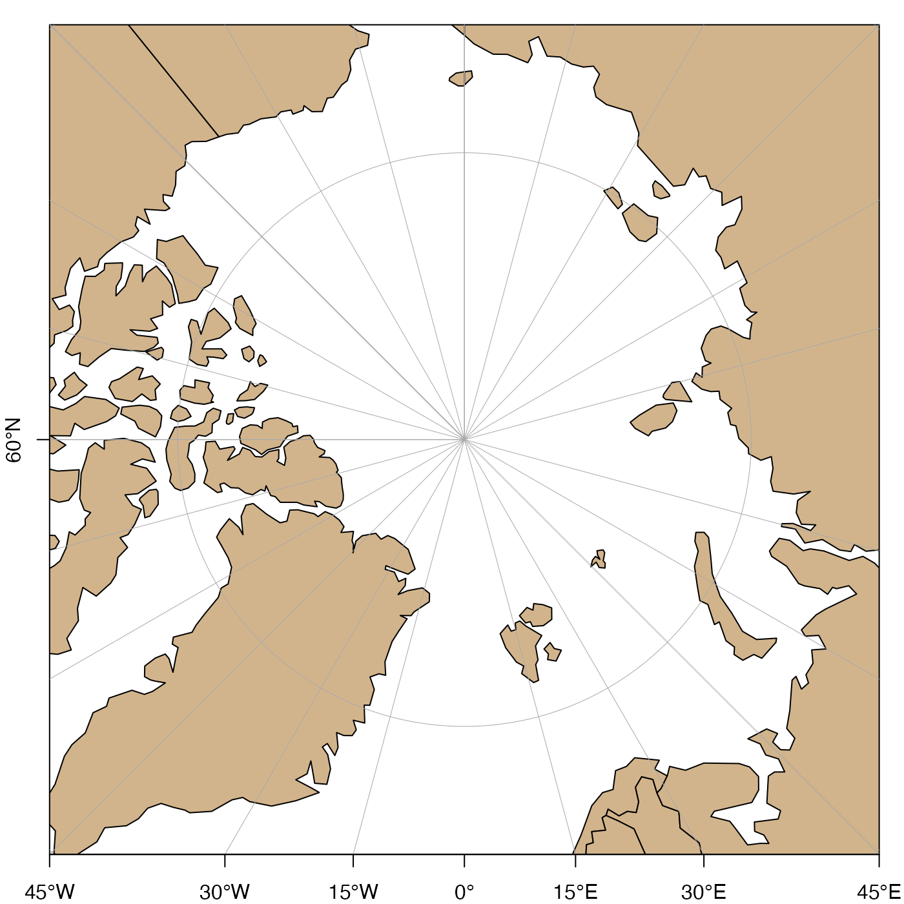

Plot axis labels on an existing map.
mapAxis( side = 1:2, longitude = TRUE, latitude = TRUE, axisStyle = 1, tick = TRUE, line = NA, pos = NA, outer = FALSE, font = NA, lty = "solid", lwd = 1, lwd.ticks = lwd, col = NULL, col.ticks = NULL, hadj = NA, padj = NA, tcl = -0.3, cex.axis = 1, mgp = c(0, 0.5, 0), debug = getOption("oceDebug") )
| side | the side at which labels are to be drawn. If not provided, sides 1 and 2 will be used (i.e. bottom and left-hand sides). |
|---|---|
| longitude | either a logical value or a numeric vector of longitudes. There
are three possible cases:
(1) If |
| latitude | similar to |
| axisStyle | an integer specifying the style of labels for the numbers on axes. The choices are: 1 for signed numbers without additional labels; 2 (the default) for unsigned numbers followed by letters indicating the hemisphere; 3 for signed numbers followed by a degree sign; 4 for unsigned numbers followed by a degree sign; and 5 for signed numbers followed by a degree sign and letters indicating the hemisphere. |
| tick | parameter passed to |
| line | parameter passed to |
| pos | parameter passed to |
| outer | parameter passed to |
| font | axis font, passed to |
| lty | axis line type, passed to |
| lwd | axis line width, passed to |
| lwd.ticks | tick line width, passed to |
| col | axis color, passed to |
| col.ticks | axis tick color, passed to |
| hadj | an argument that is transmitted to |
| padj | an argument that is transmitted to |
| tcl | axis-tick size (see |
| cex.axis | axis-label expansion factor (see |
| mgp | three-element numerical vector describing axis-label
placement (see |
| debug | a flag that turns on debugging. Set to 1 to get a moderate amount of debugging information, or to 2 to get more. |
This function is still in development, and the argument list as well as the action taken are both subject to change, hence the brevity of this help page.
Note that if a grid line crosses the axis twice, only one label will be drawn.
A map must first have been created with mapPlot().
Other functions related to maps:
formatPosition(),
lonlat2map(),
lonlat2utm(),
map2lonlat(),
mapArrows(),
mapContour(),
mapCoordinateSystem(),
mapDirectionField(),
mapGrid(),
mapImage(),
mapLines(),
mapLocator(),
mapLongitudeLatitudeXY(),
mapPlot(),
mapPoints(),
mapPolygon(),
mapScalebar(),
mapText(),
mapTissot(),
oceCRS(),
shiftLongitude(),
usrLonLat(),
utm2lonlat()
# \donttest{ library(oce) data(coastlineWorld) par(mar=c(2, 2, 3, 1)) lonlim <- c(-180, 180) latlim <- c(60, 120) mapPlot(coastlineWorld, projection="+proj=stere +lat_0=90", longitudelim=lonlim, latitudelim=latlim, grid=FALSE)mapAxis()#> Warning: mapAxis(side=1) cannot draw latitude labels yet; contact author if you need this#> Warning: mapAxis(side=2) cannot draw longitude labels yet; contact author if you need this# }